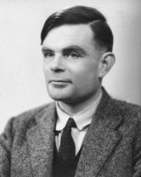
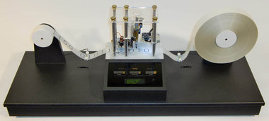
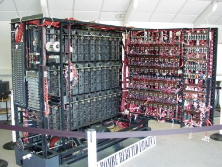

A
lan Turing er einn þekktasti og áhrifamesti vísindamaðurinn á
sviði tölvunarfræði. Til marks um það má nefna að bandarísku tölvusamtökin
ACM kenna hin árlegu verðlaun sín við hann. Turing-verðlaunin eru
gjarnan nefnd Nóbelsverðlaun tölvunarfræðinganna.

Turing fæddist í London 23. júní 1912. Hann lærði stærðfræði við
Cambridge-háskóla og hlaut doktorsgráðu í stærðfræði árið 1938 frá
Princeton-háskóla í Bandaríkjunum. Á þessum árum lagði
Turing grunn að nokkrum mikilvægum hugtökum í fræðilegri
tölvunarfræði og gervigreind.
Alan Turing átti stóran þátt í því að skilgreina hugtakið
reiknanleiki, það er hvaða verkefni eru leysanleg. Til þess þurfti fyrst
að skilgreina á fræðilegan hátt hvað það þýðir að leysa verkefni. Árið
1936, þegar Turing var aðeins 24 ára, skrifaði hann grein þar sem
hann setti fram formlegt líkan að tæki til að leysa verkefni. Þetta líkan,
sem nú gengur undir nafninu Turing-vél, getur aðeins framkvæmt
mjög einfaldar aðgerðir, en með því að setja vélarnar saman er hægt að
leysa öll verkefni sem tölvur geta leyst og engin önnur. En
Turing gerði meira. Hann setti einnig fram lýsingu á svokallaðri
almennri Turing-vél (e. Universal Turing machine), sem
er þannig að hún getur lesið minni sitt og framkvæmt skipanirnar sem þar
eru kóðaðar. Þetta líkan var sett fram árið 1936, sem er að minnsta kosti
10 árum áður en fyrsta tölvan sem geymir forrit í minni var smíðuð. Þessi
eiginleiki gerir það að verkum að tölvan getur unnið með forrit eins og
hver önnur gögn og er eitt mikilvægasta einkenni tölva. Það eru því margir
sem halda því fram að Alan Turing sé hinn raunverulegi faðir
nútímatölvunnar.
Síðast en ekki síst sannaði Turing í þessari grein sinni að það
eru til verkefni, mjög einföld og auðskilin verkefni, sem ekki eru
leysanleg. Eitt af þeim er stöðvunarverkefnið (e. the halting problem). Í
því er gefin lýsing á Turing-vél og inntak í hana. Spurt er hvort
vélin muni stöðvast á þessu inntaki. Samkvæmt Turing er þetta
verkefni óleysanlegt, það er ekki er til Turing-vél sem getur
leyst þetta verkefni fyrir allar mögulegar Turing-vélar og inntak
í þær. Sett í nútímabúning segir setning Turings að ekki sé
almennt hægt að ákvarða hvort forrit muni hætta keyrslu á tilteknu inntaki
eða lenda í endalausri lykkju. Við fyrstu sýn virðist þetta ekki geta
staðist, en lykilatriði er að það þarf að vera eitt forrit (það er ein
Turing-vél) sem ræður við að ákvarða þetta fyrir öll forrit og
inntak í þau.

Turing hafði mikinn áhuga á spurningunni hvort tölvur gætu
hugsað. Ólíkt mörgum öðrum sem rökræddu málið fram og til baka án
niðurstöðu hannaði Turing próf sem ætti að geta svarað
spurningunni afdráttarlaust. Prófið felst í því að athuga hvort tölva geti
líkt nógu vel eftir manneskju til þess að blekkja mannlegan notanda. Í
prófinu, sem nú er kallað Turing-prófið, situr mannlegur notandi
við samskiptatæki sem er tengt við tvö lokuð herbergi. Í öðru herberginu
situr manneskja, en í hinu er tölva. Notandinn getur spurt báða
keppendurna spurninga með því að slá þær inn í samskiptatækið.
Keppendurnir svara spurningunum á sama hátt og reyna að sannfæra notandann
um að þeir séu manneskjan. Eftir einhvern tiltekinn tíma á notandinn síðan
að segja til um það í hvoru herberginu er tölva og hvort inniheldur
manneskju.
Þess má geta að á árunum 1991-2019 var árlega haldin keppni milli forrita
í Turing-prófinu sem kallaðist Loebner-verðlaunin (Loebner
Prize). Engu forriti tókst á þeim tíma að vinna aðalverðlaunin, sem fólust
í því að blekkja meirihluta dómaranna, en á hverju ári voru veitt verðlaun
fyrir það forrit sem þótti hafa manneskjulegustu tilsvörin.
Flestir tölvunotendur í dag lenda reglulega í eins konar
Turing-prófi. Þetta eru hin svokölluðu Captcha-próf, sem eru
bjagaðar myndir af bókstöfum sem notandinn þarf að slá inn til að komast
inn á margar heimasíður. Hægt er að sjá dæmi um þetta á vef Hæstaréttar og
einnig geta lesendur þessa svars smellt á þennan hlekk og sent svarið
áfram á annan notanda. Áður en það er hægt þurfa menn að leysa
Captcha-próf. Eigandi heimasíðunnar treystir því að aðeins mannlegur
notandi geti lesið úr myndinni og getur þannig greint á milli forrita og
manneskja.

Í seinni heimsstyrjöldinni átti Alan Turing stóran þátt í að
brjóta upp aðferðina sem Þjóðverjar notuðu til að dulkóða skeytasendingar
sínar. Dulkóðunin var framkvæmd með dulkóðunarvélinni Enigma og gekk
bandamönnum mjög illa að afkóða skeytin. Turing og félagar hans í
Bletchley Park smíðuðu eins konar tölvu, sem kölluð var bomba, til þess að
afkóða dulkóðuðu skeytin. Þetta voru meðal annars skeyti frá þýskum
kafbátum með staðsetningum þeirra. Talið er að verk Turings hafi
bjargað fjölda mannslífa með því að koma í veg fyrir að skipalestir
bandamanna sigldu beint í flasið á þýsku kafbátunum.
Árið 1952 var Turing ákærður fyrir samkynhneigð og við það missti
hann allan aðgang að dulkóðunarverkefnum á vegum hersins. Þetta var þegar
kalda stríðið stóð sem hæst og ofsóknarkennd breskra yfirvalda því í
hámarki. Talið var að samkynhneigð Turings gerði hann að auðveldu
fórnarlambi fyrir rússneska njósnara. Turing mátti velja milli
þess að fara í fangelsi eða í hormónameðferð. Hann valdi seinni kostinn,
en varð mjög þunglyndur og tveimur árum síðar, 7. júní 1954, framdi hann
sjálfsmorð með því að borða eitrað epli. Árið 2009 baðst breska
ríkisstjórnin formlega afsökunar á þessari skelfilegu meðferð á Alan
Turing. Á næsta ári verða liðin 100 ár frá fæðingu
Turings og haldið verður upp á það með ýmsum hætti.